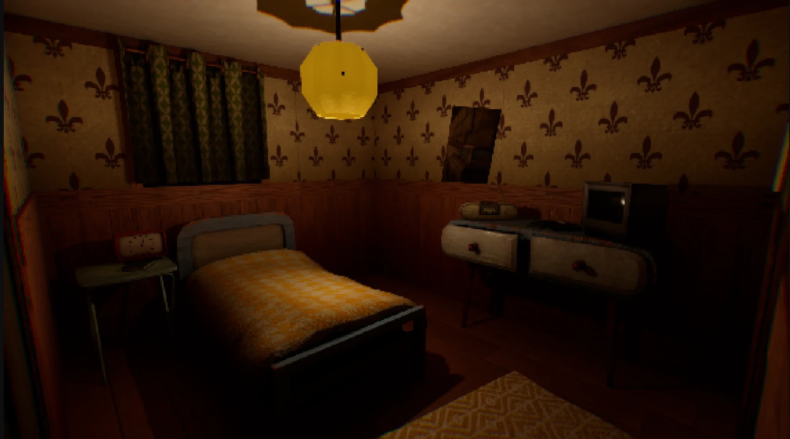
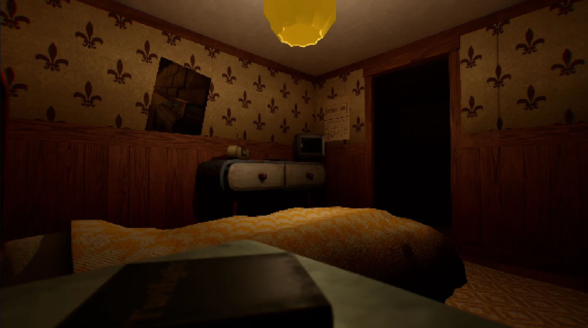
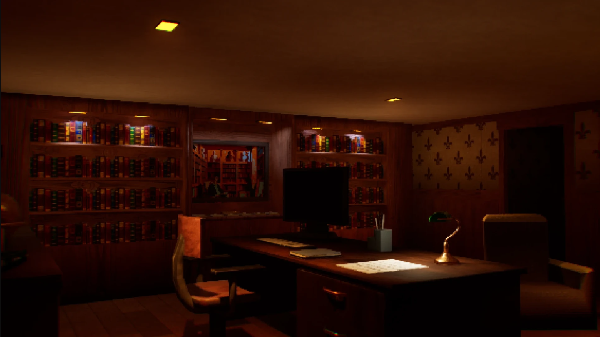
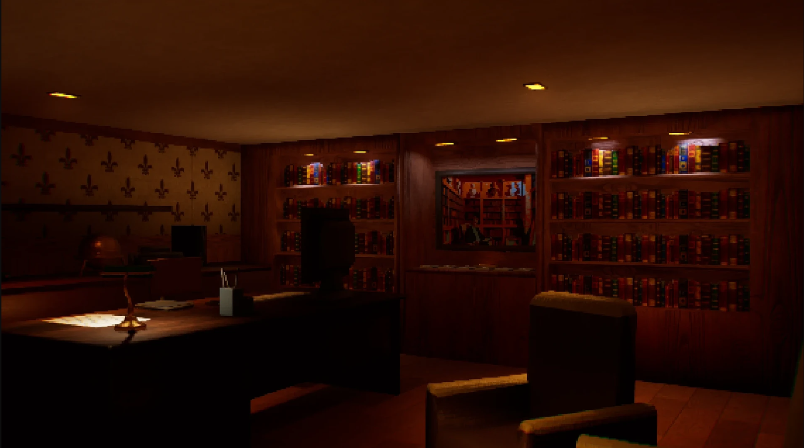
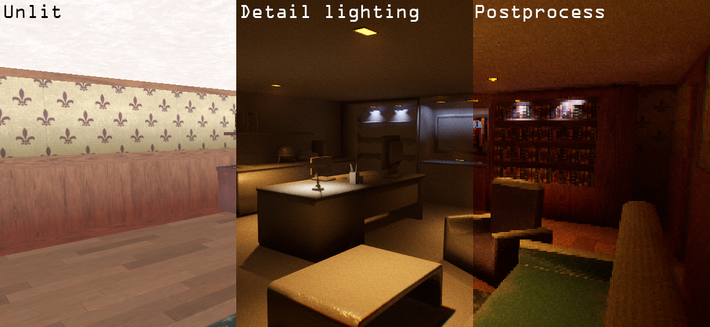
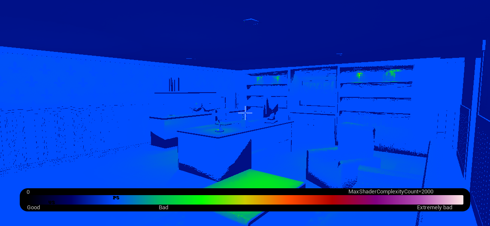

QUIET MODE
Lighting & post process shaders created for unreal's EpicJam aimed to give the environment a retro look & feel.
My work for this project consisted mainly in developing a post process shader that would aid in giving a retro look and feel to the game in combination with the props and meshes developed.
The first of these shaders is a post process shader created to give a pixelized look reminiscent of first and second generation 3D games, with the option of increasing or decreasing the pixelization and chromatic aberration as well as a black and white filter.
The second shader works in a material base and it’s aimed to give more depth and texture to the architectural modules. Since most of these modules and props have fairly simple textures, this shader takes the base albedo channel as a parameter and aplies a gradient that gradually darkens the material by the amount and intensity chosen by the player, it also has the option to generate level-based Ambient Occlusion if necessary.
Finally, I was also in charge of determining the mood by setting the lighting. Since the environment is supposed to feel “grungy” and the props were inspired by furniture and elements from the 80´s and 90´s, I opted for warm dim lighting to give it that feel of night-time, as it was what worked best with the props and aesthetic that was designed previously.




Lighting complexity and shader influence

